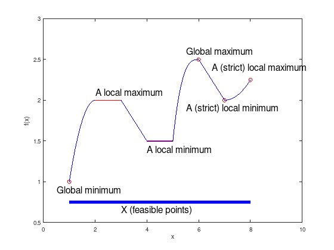
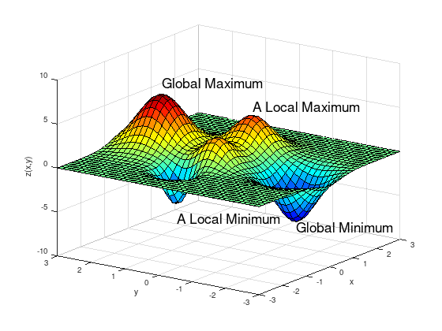
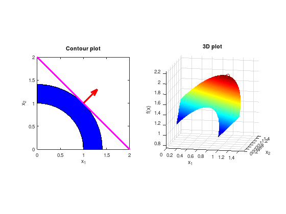

The optimization problem¶
\(x = (x_{1}, x_{2}, \ldots)\): optimization variables
\(f \colon \mathcal{X} \to \mathbb{R}\): objective function
\(g_{i} \colon \mathcal{X} \to \mathbb{R}, i = 1, \ldots, m\): inequality constraint functions
\(h_{j} \colon \mathcal{X} \to \mathbb{R}, j = 1, \ldots, p\): equality constraint functions
Decision set \(\mathcal{X}\) may be finite \(\mathbb{R}^{n}\), a set of matrices, a discrete set \(\mathbb{Z}^{n}\), or an infinite dimensional set.
Constraint functions \(g_{i}(x)\) and \(h_{j}(x)\) limit the decision set \(\mathcal{X}\) to a set of feasible points \(x \in X \subset \mathcal{X}\).
The Optimal solution \(x^{*} \in X\) has smallest value of \(f\) among all feasible points that “satisfy the constraints”:
Classes of optimizations problems¶
Unconstrained optimization: \(m = p = 0\)
Constrained optimization \(m > 0\) or \(p > 0\)
Linear Programming: \(f\) linear, \(g_{i}\), \(h_{j}\) affin-linear
Quadratic Programming: \(f(x) = \frac{1}{2}x^{T}Ax + b^{T}x +c\), \(g_{i}\), \(h_{j}\) affin-linear
Convex Optimization: \(f\) convex, \(g_{i}\) convex, \(h_{j}\) affin-linear
Local and global optima¶
Consider the following piece-wise defined function:
f = {@(x) -(x - 2).^2 + 2, ...
@(x) 2, ...
@(x) -(x - 7) / 2, ...
@(x) 3/2, ...
@(x) (x - 6).^3 + 5/2, ...
@(x) -(x - 11) / 2, ...
@(x) (x - 7).^2 / 4 + 2};
for i = 1:7
fun = f{i};
x = linspace (i, i + 1, 40);
y = fun (x);
plot (x, y, 'b');
hold on;
end
xlim ([0, 10]);
ylim ([0.5, 3]);
xlabel ('x');
ylabel ('f(x)');
fmt = {'FontSize', 16};
plot (1, 1.00, 'ro'); text (0.5, 0.9, 'Global minimum', fmt{:});
plot (6, 2.50, 'ro'); text (5.5, 2.6, 'Global maximum', fmt{:});
plot (7, 2.00, 'ro'); text (5.5, 1.9, 'A (strict) local minimum', fmt{:});
plot (8, 2.25, 'ro'); text (6.5, 2.4, 'A (strict) local maximum', fmt{:});
plot (2:3, [2, 2], 'r'); text (2, 2.1, 'A local maximum', fmt{:});
plot (4:5, [3, 3] / 2, 'r'); text (4, 1.4, 'A local minimum', fmt{:});
plot ([1, 8], [0.75, 0.75], 'b', 'LineWidth', 6);
text (3, 0.65, 'X (feasible points)', fmt{:});

Local and global optima of a two-dimensional function.
N = 3;
[X,Y] = meshgrid (linspace (-N, N, 40));
% Gaussian probability density function (PDF)
GAUSS = @(sigma, mu) 1 / (sigma * sqrt (2*pi)) * ...
exp (-0.5 * ((X - mu(1)).^2 + (Y - mu (2)).^2) / sigma^2);
Z = 9 * GAUSS (0.6, [ 0.0, 2.0]) + 5 * GAUSS (0.5, [ 1.0, 0.0]) ...
+ 3 * GAUSS (0.4, [-0.5, 0.0]) - 3 * GAUSS (0.3, [-1.5, 0.5]) ...
- 7 * GAUSS (0.5, [ 0.0, -2.0]);
surf (X, Y, Z);
xlabel ('x');
ylabel ('y');
zlabel ('z(x,y)');
colormap ('jet');
props = {'FontSize', 18};
text ( 0.0, -2.0, -6.2, 'Global Minimum', props{:});
text ( 0.0, 2.0, 7.2, 'Global Maximum', props{:});
text (-1.5, 0.5, -5.5, 'A Local Minimum', props{:});
text ( 1.0, 0.0, 5.0, 'A Local Maximum', props{:});
view (-55, 21)

Two-dimensional constrained example¶
A simple problem can be defined by the constraints
with an objective function to be maximized
subplot (1, 2, 1);
% Visualize constrained set of feasible solutions (blue).
circ = @(x) sqrt (max(x)^2 - x.^2);
x_11 = 0:0.01:sqrt(2);
x_21 = circ (x_11);
x_12 = 1:-0.01:0;
x_22 = circ (x_12);
area ([x_11, x_12], [x_21, x_22], 'FaceColor', 'blue');
% Visualize level set of the objective function (magenta)
% and its scaled gradient (red arrow).
hold on;
plot ([0 2], [2 0], 'LineWidth', 4, 'm');
quiver (1, 1, 0.3, 0.3, 'LineWidth', 4, 'r');
axis equal;
xlim ([0 2]);
ylim ([0 2]);
xlabel ('x_1');
ylabel ('x_2');
title ('Contour plot');
subplot (1, 2, 2);
[X1, X2] = meshgrid (linspace (0, 1.5, 500));
FX = X1 + X2;
% Remove infeasible points.
FX((X1.^2 + X2.^2) < 1) = inf;
FX((X1.^2 + X2.^2) > 2) = inf;
surf (X1, X2, FX);
shading flat;
colormap ('jet');
hold on;
plot3 (1, 1, 2, 'ro');
axis equal;
xlabel ('x_1');
ylabel ('x_2');
zlabel ('f(x)');
title ('3D plot');
view (11, 12);

The intersection of the level-set of the objective function (\(f(x) = 2 = const.\)) and the constrained set of feasible solutions represents the solution.
\(\max f(x) = -\min -f(x)\)
In these lectures we are mainly interested in methods for computing local minima.
Notation¶
Vectors \(x \in \mathbb{R}^{n}\) are column vectors. \(x^{T}\) is the transposed row vector.
A norm in \(\mathbb{R}^{n}\) is denoted by \(\lVert \cdot \rVert\) and corresponds to the Euclidean norm:
Is \(\lVert \cdot \rVert\) a norm on \(\mathbb{R}^{n}\), then
defines the matrix norm (operator norm) for \(A \in \mathbb{R}^{n \times n}\).
For the Euclidean vector norm this is
where \(\lambda_{\max}(\cdot)\) denotes the maximal eigenvalue and \(\sigma_{\max}(\cdot)\) the maximal singular value of a matrix.
The open ball with center \(x \in \mathbb{R}^{n}\) and radius \(\varepsilon > 0\) is denoted by
The interior of a set \(X \subset \mathbb{R}^{n}\) is denoted by \(int(X)\) and the border by \(\partial X\). For \(x \in int(X)\) and \(\varepsilon > 0\) there is \(B_{\varepsilon}(x) \subset X\).
A subset \(X \subset \mathbb{R}^{n}\) is called “open”, if \(int(X) = X\). (“The border \(\partial X\) is not included.”)
A closed subset \(X \subset \mathbb{R}^{n}\) is called “compact”, if every open cover of \(X\) has a finite sub-cover. (“No holes in \(X\), border included.”).
Let \(f \colon \mathbb{R}^{n} \to \mathbb{R}\) be continuously differentiable (\(f \in C^{1}(\mathbb{R}^{n},\mathbb{R})\)), then the gradient of \(f\) in \(x\) is denoted by the column vector:
Let \(f \colon \mathbb{R}^{n} \to \mathbb{R}\) be twice continuously differentiable (\(f \in C^{2}(\mathbb{R}^{n},\mathbb{R})\)), then the symmetric Hessian matrix of \(f\) in \(x\) is denoted by:
A real symmetric matrix \(A \in \mathbb{R}^{n \times n}\) is positive semi-definte, if \(d^{T}Ad \geq 0\) for all \(d \in \mathbb{R}^{n} \setminus \{ 0 \}\) and is denoted by \(A \succeq 0\).
A real symmetric matrix \(A \in \mathbb{R}^{n \times n}\) is positive definte, if \(d^{T}Ad > 0\) for all \(d \in \mathbb{R}^{n} \setminus \{ 0 \}\) and is denoted by \(A \succ 0\).
The Landau symbol is defined by
Taylor’s theorem (only linear and quadratic)
Let \(f \in C^{1}(\mathbb{R}^{n},\mathbb{R})\), \(X \subset \mathbb{R}^{n}\) open, \(x \in X\), \(d \in \mathbb{R}^{n}\) and \(\lVert d \rVert\) sufficiently small, then:
Additionally, if \(f \in C^{2}(\mathbb{R}^{n},\mathbb{R})\) and for \(0 < \theta < 1\), the remainder is expressible by
Let \(f \in C^{2}(\mathbb{R}^{n},\mathbb{R})\), \(X \subset \mathbb{R}^{n}\) open, \(x \in X\), \(d \in \mathbb{R}^{n}\) and \(\lVert d \rVert\) sufficiently small, then:
Extreme value theorem¶
Let \(X \subset \mathbb{R}^{n}\) non-empty and compact and \(f \colon \mathbb{R}^{n} \to \mathbb{R}\) continuous. Then there exists a global minimum of \(f\) over \(X\).
If a real-valued function \(f\) is continuous on the closed interval \([a,b]\), then \(f\) must attain a maximum and a minimum, each at least once!